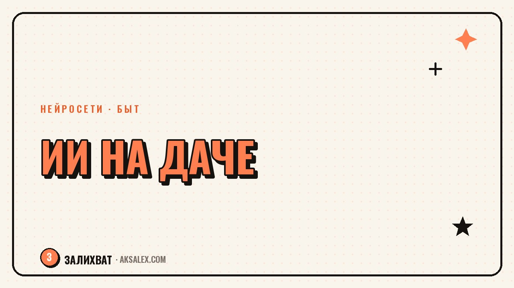

Нейросети для огорода и дачи: когда сажать и как ухаживать

Дачный сезон начинается не с рассады, а с вопросов: когда сеять, сколько кустов влезет на грядку и почему у соседа огурцы уже цветут, а у тебя только проклюнулись. Нейросети не заменят опыт и не изменят погоду, но здорово экономят время на рутине вокруг огорода: составляют график посадок под твою климатическую зону, помогают распознать проблему по фото листа и держат в голове весь план ухода, когда своей головы на это уже не хватает после рабочей недели.
План посадок под свой регион и участок
Самая муторная часть дачного планирования - свести в одну таблицу сроки посадки десяти разных культур с учётом твоего региона, размера грядок и желаемого урожая. Нейросеть справляется с этим быстро: назови регион, площадь участка и список культур, которые хочешь посадить, и получишь черновой календарь с привязкой к примерным срокам последних заморозков.
Важно понимать: нейросеть не знает точной погоды в твоём конкретном посёлке в этом году, она работает по общим климатическим нормам. Поэтому план - это стартовая точка, а финальное решение по срокам всё равно сверяй с прогнозом и собственным наблюдением за почвой.
Как сформулировать запрос
Дай нейросети конкретику: 'Я в Подмосковье, грядка 3 на 10 метров, хочу посадить томаты, огурцы, перец и зелень, составь план посадки с учётом совместимости культур и ротации по годам.' Чем подробнее исходные данные, тем реалистичнее получится план и тем меньше придётся его потом переделывать.
- Назови регион и тип почвы, если знаешь
- Укажи размер и форму грядок
- Перечисли культуры, которые точно хочешь посадить
- Спроси про совместимость растений на одной грядке
- Уточни про севооборот, если сажаешь на том же месте не первый год
Распознавание болезней и вредителей по фото
Жёлтые пятна на листе огурца, дырки на капусте, налёт на винограде - вопросы, с которыми дачники ищут ответы в интернете годами. Нейросети с поддержкой изображений (ChatGPT с загрузкой фото, Google Lens, специализированные приложения вроде PlantNet для определения растений) неплохо справляются с первичной диагностикой по фотографии.
Загружаешь фото листа или стебля, описываешь, что заметил - и получаешь несколько вероятных версий: грибковое заболевание, нехватка определённого элемента, вредитель. Дальше нейросеть подсказывает, на что обратить внимание для уточнения диагноза и какие безопасные первые меры принять, пока не появится возможность проконсультироваться с агрономом очно.
Фото листа через нейросеть - это как первая консультация в телефонном режиме: сужает круг версий, но не заменяет осмотр специалиста, если проблема серьёзная и грозит всему участку.
Особенно осторожно нужно относиться к советам по химическим препаратам: дозировки и совместимость средств защиты растений - тема, где ошибка может убить урожай или навредить почве на годы вперёд. Здесь нейросеть годится для общей ориентировки, а точную схему обработки лучше брать с упаковки препарата или у агрономического консультанта.
График полива и ухода на сезон
Если дача не каждый день и приезжать получается по выходным, самая частая проблема - растения либо засыхают, либо заливаются водой по выходным 'про запас'. Нейросеть помогает составить реалистичный график полива с учётом частоты твоих визитов: например, предложит мульчирование и капельный полив как компромисс для культур, которые плохо переносят редкий, но обильный полив.
Хорошо работает такой подход: описываешь культуры, частоту приездов на дачу и наличие или отсутствие автоматического полива, а нейросеть собирает для каждой культуры отдельную рекомендацию - что терпит сухость лучше, а что нужно поливать чаще или мульчировать сильнее.
| Задача | Справится нейросеть | Нужен агроном или опыт |
|---|---|---|
| Составить план посадок по срокам | Да, черновой календарь | Сверить с местным климатом |
| Распознать проблему по фото листа | Да, список версий | Подтвердить при серьёзном поражении |
| Собрать график полива под визиты | Да, рекомендации по культурам | Скорректировать по факту погоды |
| Подобрать дозировку препарата | Нет, слишком высокий риск | Да, строго по инструкции или спецу |
| Прикинуть урожай с грядки | Да, примерная оценка | Точность зависит от сорта и ухода |
Расчёт урожая и планирование грядок
Ещё одна задача, где нейросеть экономит время - прикинуть, сколько урожая реально получить с имеющейся площади, и сколько банок заготовок из этого выйдет. Это грубая оценка, но она помогает понять, стоит ли сажать ещё один ряд кабачков или уже девать некуда прошлогодний урожай.
Также удобно просить нейросеть прикинуть совместное размещение культур на грядке, чтобы высокие растения не затеняли низкие, а быстро созревающая зелень успевала убраться до посадки основной культуры второй волной. Это классическая задача планирования, с которой текстовый ИИ справляется неплохо, если дать точные размеры.
Ведение дачного дневника с помощью ИИ
Опытные дачники годами ведут записи: что посадили, когда взошло, что сработало, а что не стоит повторять. Нейросеть помогает превратить разрозненные заметки в структурированный дневник - вставляешь свои записи за сезон, а она собирает выводы: какие сорта показали себя лучше, в какие сроки реально случились заморозки по твоим наблюдениям, что имеет смысл изменить на следующий год.
Это особенно ценно на второй-третий год дачной жизни, когда накопился материал для сравнения, но руками сводить его в таблицы и графики лень. Закинь текстом свои заметки по месяцам - и получишь аккуратный отчёт по сезону с рекомендациями на будущий.
Частые вопросы
Может ли нейросеть точно определить болезнь растения по фото?
Она даёт список вероятных версий на основе визуальных признаков, но не ставит точный диагноз. При серьёзном поражении грядки или сада стоит показать фото или образец агроному очно, особенно если речь о заражении, которое может распространиться на весь участок.
Какую нейросеть использовать для плана посадок на даче?
Подойдёт любой текстовый ассистент с возможностью долгого диалога - ChatGPT, Claude, Gemini. Специализированных сервисов именно под план посадок немного, зато обычная нейросеть хорошо справляется, если дать ей регион, размер грядок и список культур.
Стоит ли доверять нейросети расчёт дозировки удобрений и препаратов?
Нет, здесь риск ошибки слишком высок. Точную дозировку всегда бери с инструкции на упаковке препарата или у агрономического консультанта, а нейросеть используй только для общей ориентировки по типу средства.
Как нейросеть помогает с графиком полива, если на даче бываешь не каждый день?
Она подскажет, какие культуры переносят редкий полив лучше других, и предложит компромиссы вроде мульчирования или капельной системы. Точная частота всё равно зависит от погоды и типа почвы, которые нужно проверять на месте.
Можно ли вести дачный дневник с помощью нейросети?
Да, это одна из самых удобных задач: заносишь свои заметки по сезону текстом, а нейросеть сводит их в структурированный отчёт с выводами о сортах и сроках. Со временем такой дневник помогает точнее планировать следующие сезоны.
Раз тема оказалась полезной, вот что почитать следующим. Нейросети для питомца: разбор поведения, план дрессировки и меню без магии, зато с конкретными промптами.
Читать статью →а не вручную